06wk-2: 포트폴리오 (1)
1. 강의영상
2. \(N\) 명을 받으면?
- 한 사람당 EPV 만큼 받으면
- \(N\) 이 작을 때: EPV 만큼 받음 \(\neq\) 안 망함, EPV 만큼 받음 \(\neq\) 50% 만 망함.
- \(N\) 이 클 때: EPV 만큼 받음 \(\neq\) 안 망함, EPV 만큼 받음 \(\approx\) 50% 만 망함.
# 예제1 남은 수명이 확률 0.2 로 2년, 확률 0.8 로 30년인 사람들이 있다. 이런 사람들을 서로 독립으로 \(N\) 명 받는다. 보험금은 1억, \(i = 0.05\) 이고, 한 사람당 EPV 를 받는다. \(N = 1, 2, \dots, 100\) 일 때 회사가 망할 확률을 각각 구하라.
(풀이)
\(N = 1\) // 망할 확률 \(0.2\) // 받은 돈 \(=\) EPV \(\times\, S \times N = 0.3665 \times 10{,}000 \times 1 = 3{,}665\) 만원
| case | 확률 | 사람별 \(Z\) | \(t=0\) | \(t=2\) | \(t=30\) | |||||
|---|---|---|---|---|---|---|---|---|---|---|
| \(Z_{1}\) | \(\mathrm{sum}(Z)\) | \(\mathrm{E}(Z)\) | \(N\,\mathrm{E}(Z)\) | received | 남은 돈 | 파산 | 남은 돈 | 파산 | ||
| 0 · 1 | 0.8 | 0.231 | 0.2314 | 0.3665 | 0.3665 | 3,665 | 4,041 | X | 5,840 | X |
| 1 · 0 | 0.2 | 0.907 | 0.9070 | 0.3665 | 0.3665 | 3,665 | −5,959 | O | −23,361 | O |
case \(=\) (2년 시점 사망 수) \(\cdot\) (30년 시점 사망 수)
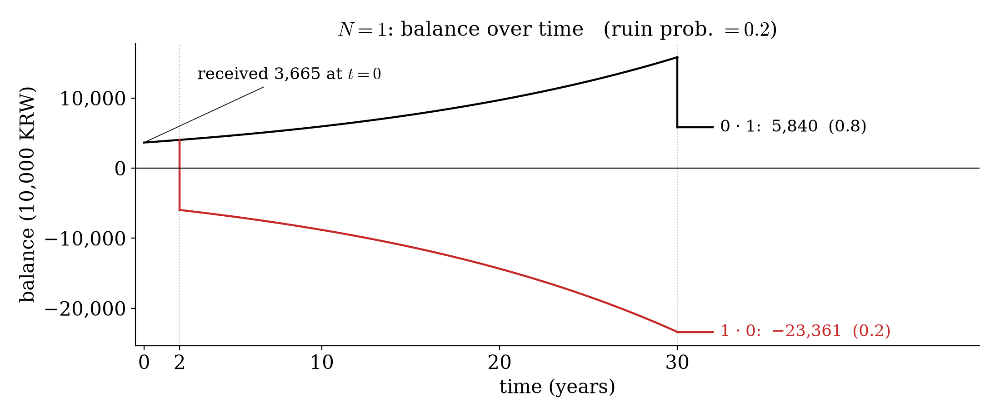
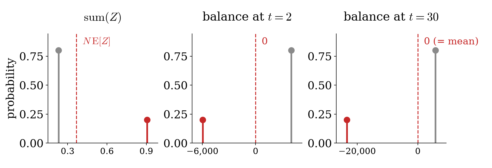
\(N = 2\) // 망할 확률 \(0.36\) // 받은 돈 \(=\) EPV \(\times\, S \times N = 0.3665 \times 10{,}000 \times 2 = 7{,}330\) 만원
| case | 확률 | 사람별 \(Z\) | \(t=0\) | \(t=2\) | \(t=30\) | ||||||
|---|---|---|---|---|---|---|---|---|---|---|---|
| \(Z_{1}\) | \(Z_{2}\) | \(\mathrm{sum}(Z)\) | \(\mathrm{E}(Z)\) | \(N\,\mathrm{E}(Z)\) | received | 남은 돈 | 파산 | 남은 돈 | 파산 | ||
| 0 · 2 | 0.64 | 0.231 | 0.231 | 0.4628 | 0.3665 | 0.7330 | 7,330 | 8,081 | X | 11,681 | X |
| 1 · 1 | 0.32 | 0.907 | 0.231 | 1.1384 | 0.3665 | 0.7330 | 7,330 | −1,919 | O | −17,521 | O |
| 0.231 | 0.907 | ||||||||||
| 2 · 0 | 0.04 | 0.907 | 0.907 | 1.8141 | 0.3665 | 0.7330 | 7,330 | −11,919 | O | −46,722 | O |
case \(=\) (2년 시점 사망 수) \(\cdot\) (30년 시점 사망 수)
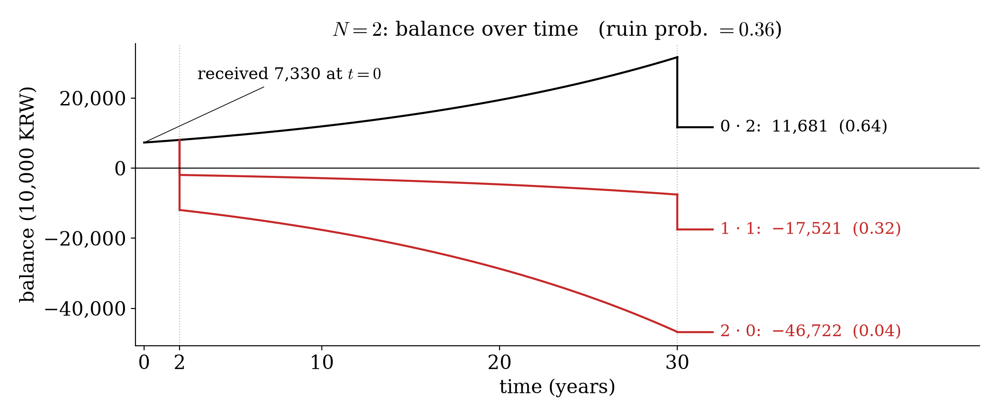
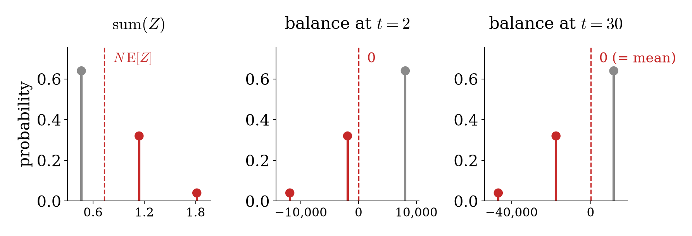
\(N = 3\) // 망할 확률 \(0.488\) // 받은 돈 \(=\) EPV \(\times\, S \times N = 0.3665 \times 10{,}000 \times 3 = 10{,}995\) 만원
| case | 확률 | 사람별 \(Z\) | \(t=0\) | \(t=2\) | \(t=30\) | |||||||
|---|---|---|---|---|---|---|---|---|---|---|---|---|
| \(Z_{1}\) | \(Z_{2}\) | \(Z_{3}\) | \(\mathrm{sum}(Z)\) | \(\mathrm{E}(Z)\) | \(N\,\mathrm{E}(Z)\) | received | 남은 돈 | 파산 | 남은 돈 | 파산 | ||
| 0 · 3 | 0.512 | 0.231 | 0.231 | 0.231 | 0.6941 | 0.3665 | 1.0995 | 10,995 | 12,122 | X | 17,521 | X |
| 1 · 2 | 0.384 | 0.907 | 0.231 | 0.231 | 1.3698 | 0.3665 | 1.0995 | 10,995 | 2,122 | X | −11,681 | O |
| 0.231 | 0.907 | 0.231 | ||||||||||
| 0.231 | 0.231 | 0.907 | ||||||||||
| 2 · 1 | 0.096 | 0.907 | 0.907 | 0.231 | 2.0454 | 0.3665 | 1.0995 | 10,995 | −7,878 | O | −40,882 | O |
| 0.907 | 0.231 | 0.907 | ||||||||||
| 0.231 | 0.907 | 0.907 | ||||||||||
| 3 · 0 | 0.008 | 0.907 | 0.907 | 0.907 | 2.7211 | 0.3665 | 1.0995 | 10,995 | −17,878 | O | −70,083 | O |
case \(=\) (2년 시점 사망 수) \(\cdot\) (30년 시점 사망 수)
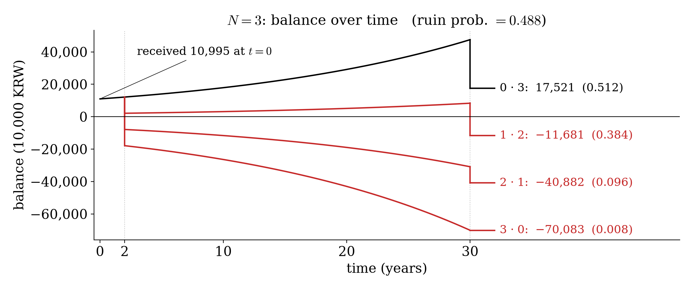
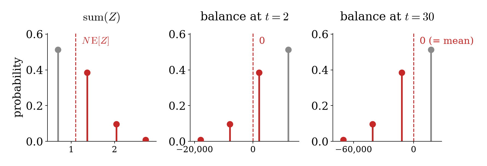
\(N = 4\) // 망할 확률 \(0.5904\) // 받은 돈 \(=\) EPV \(\times\, S \times N = 0.3665 \times 10{,}000 \times 4 = 14{,}660\) 만원
| case | 확률 | 사람별 \(Z\) | \(t=0\) | \(t=2\) | \(t=30\) | ||||||||
|---|---|---|---|---|---|---|---|---|---|---|---|---|---|
| \(Z_{1}\) | \(Z_{2}\) | \(Z_{3}\) | \(Z_{4}\) | \(\mathrm{sum}(Z)\) | \(\mathrm{E}(Z)\) | \(N\,\mathrm{E}(Z)\) | received | 남은 돈 | 파산 | 남은 돈 | 파산 | ||
| 0 · 4 | 0.4096 | 0.231 | 0.231 | 0.231 | 0.231 | 0.9255 | 0.3665 | 1.4660 | 14,660 | 16,163 | X | 23,361 | X |
| 1 · 3 | 0.4096 | 0.907 | 0.231 | 0.231 | 0.231 | 1.6012 | 0.3665 | 1.4660 | 14,660 | 6,163 | X | −5,840 | O |
| 0.231 | 0.907 | 0.231 | 0.231 | ||||||||||
| 0.231 | 0.231 | 0.907 | 0.231 | ||||||||||
| 0.231 | 0.231 | 0.231 | 0.907 | ||||||||||
| 2 · 2 | 0.1536 | 0.907 | 0.907 | 0.231 | 0.231 | 2.2768 | 0.3665 | 1.4660 | 14,660 | −3,837 | O | −35,042 | O |
| 0.907 | 0.231 | 0.907 | 0.231 | ||||||||||
| ⋮ | ⋮ | ⋮ | ⋮ | ||||||||||
| 0.231 | 0.231 | 0.907 | 0.907 | ||||||||||
| 3 · 1 | 0.0256 | 0.907 | 0.907 | 0.907 | 0.231 | 2.9525 | 0.3665 | 1.4660 | 14,660 | −13,837 | O | −64,243 | O |
| 0.907 | 0.907 | 0.231 | 0.907 | ||||||||||
| 0.907 | 0.231 | 0.907 | 0.907 | ||||||||||
| 0.231 | 0.907 | 0.907 | 0.907 | ||||||||||
| 4 · 0 | 0.0016 | 0.907 | 0.907 | 0.907 | 0.907 | 3.6281 | 0.3665 | 1.4660 | 14,660 | −23,837 | O | −93,444 | O |
case \(=\) (2년 시점 사망 수) \(\cdot\) (30년 시점 사망 수)
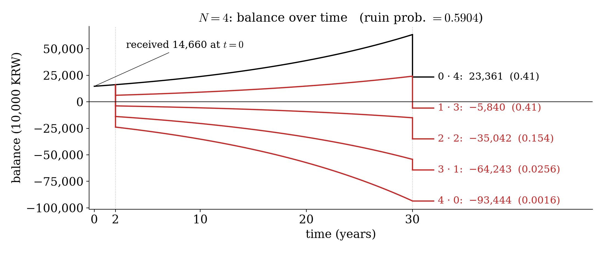
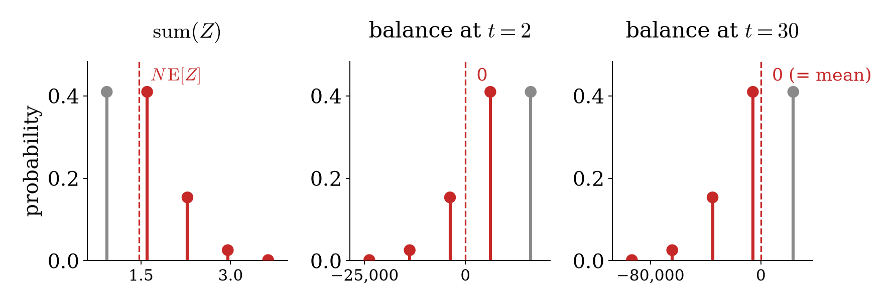
\(N = 5\) // 망할 확률 \(0.26272\) // 받은 돈 \(=\) EPV \(\times\, S \times N = 0.3665 \times 10{,}000 \times 5 = 18{,}325\) 만원
| case | 확률 | 사람별 \(Z\) | \(t=0\) | \(t=2\) | \(t=30\) | |||||||||
|---|---|---|---|---|---|---|---|---|---|---|---|---|---|---|
| \(Z_{1}\) | \(Z_{2}\) | \(Z_{3}\) | \(Z_{4}\) | \(Z_{5}\) | \(\mathrm{sum}(Z)\) | \(\mathrm{E}(Z)\) | \(N\,\mathrm{E}(Z)\) | received | 남은 돈 | 파산 | 남은 돈 | 파산 | ||
| 0 · 5 | 0.32768 | 0.231 | 0.231 | 0.231 | 0.231 | 0.231 | 1.1569 | 0.3665 | 1.8325 | 18,325 | 20,204 | X | 29,201 | X |
| 1 · 4 | 0.4096 | 0.907 | 0.231 | 0.231 | 0.231 | 0.231 | 1.8325 | 0.3665 | 1.8325 | 18,325 | 10,204 | X | 0 | X |
| 0.231 | 0.907 | 0.231 | 0.231 | 0.231 | ||||||||||
| ⋮ | ⋮ | ⋮ | ⋮ | ⋮ | ||||||||||
| 0.231 | 0.231 | 0.231 | 0.231 | 0.907 | ||||||||||
| 2 · 3 | 0.2048 | 0.907 | 0.907 | 0.231 | 0.231 | 0.231 | 2.5082 | 0.3665 | 1.8325 | 18,325 | 204 | X | −29,201 | O |
| 0.907 | 0.231 | 0.907 | 0.231 | 0.231 | ||||||||||
| ⋮ | ⋮ | ⋮ | ⋮ | ⋮ | ||||||||||
| 0.231 | 0.231 | 0.231 | 0.907 | 0.907 | ||||||||||
| 3 · 2 | 0.0512 | 0.907 | 0.907 | 0.907 | 0.231 | 0.231 | 3.1838 | 0.3665 | 1.8325 | 18,325 | −9,796 | O | −58,403 | O |
| 0.907 | 0.907 | 0.231 | 0.907 | 0.231 | ||||||||||
| ⋮ | ⋮ | ⋮ | ⋮ | ⋮ | ||||||||||
| 0.231 | 0.231 | 0.907 | 0.907 | 0.907 | ||||||||||
| 4 · 1 | 0.0064 | 0.907 | 0.907 | 0.907 | 0.907 | 0.231 | 3.8595 | 0.3665 | 1.8325 | 18,325 | −19,796 | O | −87,604 | O |
| 0.907 | 0.907 | 0.907 | 0.231 | 0.907 | ||||||||||
| ⋮ | ⋮ | ⋮ | ⋮ | ⋮ | ||||||||||
| 0.231 | 0.907 | 0.907 | 0.907 | 0.907 | ||||||||||
| 5 · 0 | 0.00032 | 0.907 | 0.907 | 0.907 | 0.907 | 0.907 | 4.5351 | 0.3665 | 1.8325 | 18,325 | −29,796 | O | −116,805 | O |
case \(=\) (2년 시점 사망 수) \(\cdot\) (30년 시점 사망 수)
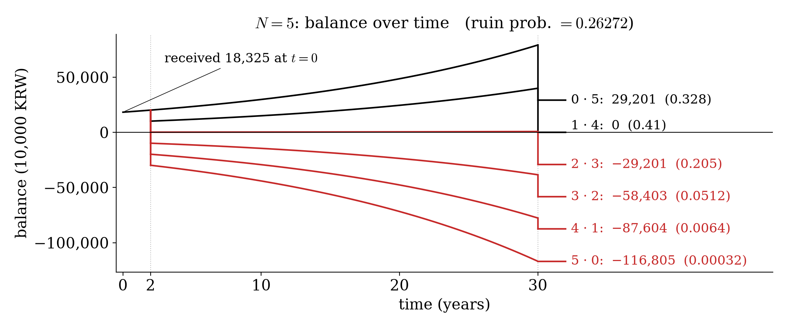
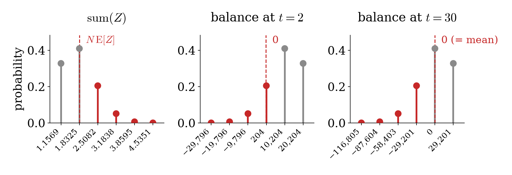
⋮
⋮
⋮
\(N = 100\) // 망할 확률 \(0.44054\) // 받은 돈 \(=\) EPV \(\times\, S \times N = 0.366508 \times 10{,}000 \times 100 = 366{,}508\) 만원
| case | 확률 | 사람별 \(Z\) | \(t=0\) | \(t=2\) | \(t=30\) | |||||
|---|---|---|---|---|---|---|---|---|---|---|
| \(Z_1, \dots, Z_{100}\) | \(\mathrm{sum}(Z)\) | \(\mathrm{E}(Z)\) | \(N\,\mathrm{E}(Z)\) | received | 남은 돈 | 파산 | 남은 돈 | 파산 | ||
| 0 · 100 | 0.0000 | 0.907 또는 0.231 |
23.1377 | 0.3665 | 36.6508 | 366,508 | 404,075 | X | 584,026 | X |
| ⋮ | ⋮ | ⋮ | ⋮ | ⋮ | ⋮ | ⋮ | ⋮ | |||
| 18 · 82 | 0.0909 | 35.2995 | 0.3665 | 36.6508 | 366,508 | 224,075 | X | 58,403 | X | |
| 19 · 81 | 0.0981 | 35.9751 | 0.3665 | 36.6508 | 366,508 | 214,075 | X | 29,201 | X | |
| 20 · 80 | 0.0993 | 36.6508 | 0.3665 | 36.6508 | 366,508 | 204,075 | X | 0 | X | |
| 21 · 79 | 0.0946 | 37.3264 | 0.3665 | 36.6508 | 366,508 | 194,075 | X | −29,201 | O | |
| 22 · 78 | 0.0849 | 38.0021 | 0.3665 | 36.6508 | 366,508 | 184,075 | X | −58,403 | O | |
| ⋮ | ⋮ | ⋮ | ⋮ | ⋮ | ⋮ | ⋮ | ⋮ | |||
| 100 · 0 | 0.0000 | 90.7029 | 0.3665 | 36.6508 | 366,508 | −595,925 | O | −2,336,103 | O | |
case \(=\) (2년 시점 사망 수) \(\cdot\) (30년 시점 사망 수)
사람별 \(Z\) 는 2년 시점에 죽은 사람이면 \(0.907\), 30년 시점에 죽은 사람이면 \(0.231\) 이다. 예를 들어 case 가 \(18 \cdot 82\) 면 \(0.907\) 인 사람이 18명, \(0.231\) 인 사람이 82명이다.
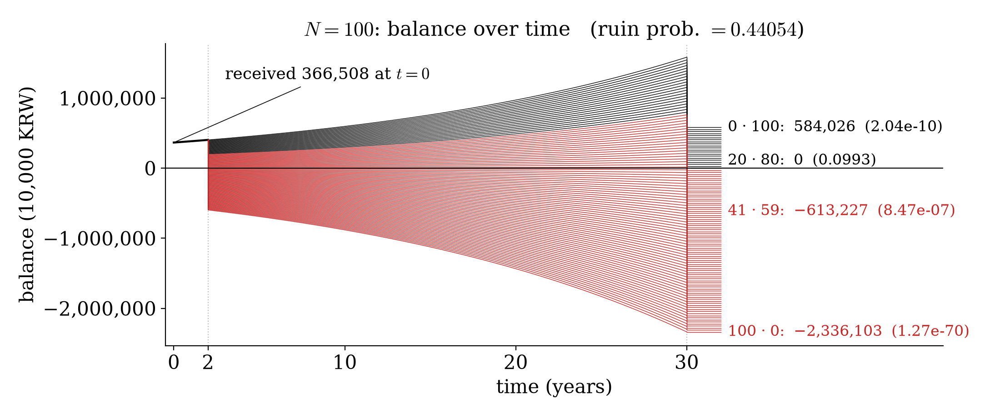
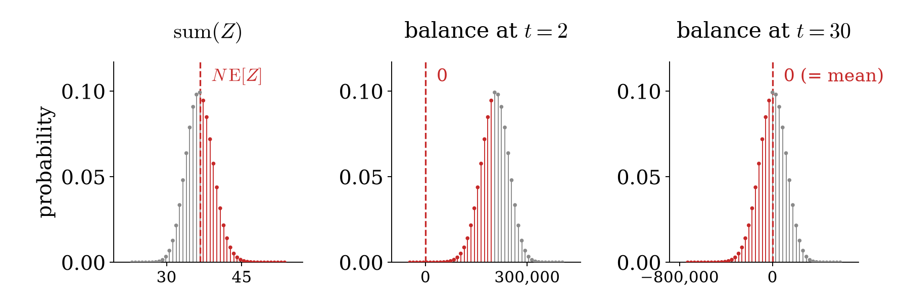
#
- 예제1에서 \(N\) 에 따라 망할 확률이 아래처럼 변한다.
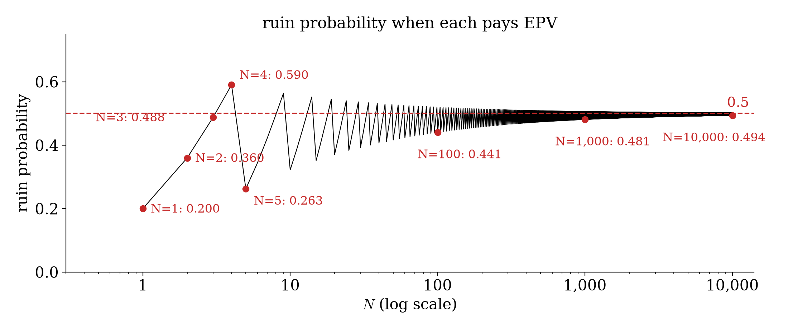
# 예제2 남은 수명이 확률 0.8 로 2년, 확률 0.2 로 30년인 사람들이 있다(예제1 과 확률이 반대다). 이런 사람들을 서로 독립으로 \(N\) 명 받는다. 보험금은 1억, \(i = 0.05\) 이고, 한 사람당 EPV 를 받는다. \(N = 1, 2, \dots, 100\) 일 때 회사가 망할 확률을 각각 구하라.
(풀이)
\(N = 1\) // 망할 확률 \(0.8\) // 받은 돈 \(=\) EPV \(\times\, S \times N = 0.7719 \times 10{,}000 \times 1 = 7{,}719\) 만원
| case | 확률 | 사람별 \(Z\) | \(t=0\) | \(t=2\) | \(t=30\) | |||||
|---|---|---|---|---|---|---|---|---|---|---|
| \(Z_{1}\) | \(\mathrm{sum}(Z)\) | \(\mathrm{E}(Z)\) | \(N\,\mathrm{E}(Z)\) | received | 남은 돈 | 파산 | 남은 돈 | 파산 | ||
| 0 · 1 | 0.2 | 0.231 | 0.2314 | 0.7719 | 0.7719 | 7,719 | 8,510 | X | 23,361 | X |
| 1 · 0 | 0.8 | 0.907 | 0.9070 | 0.7719 | 0.7719 | 7,719 | −1,490 | O | −5,840 | O |
case \(=\) (2년 시점 사망 수) \(\cdot\) (30년 시점 사망 수)
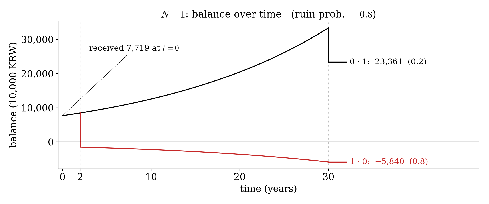
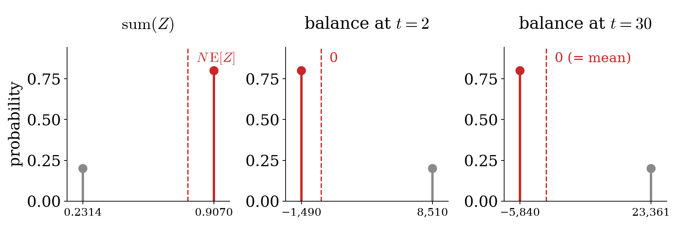
\(N = 2\) // 망할 확률 \(0.64\) // 받은 돈 \(=\) EPV \(\times\, S \times N = 0.7719 \times 10{,}000 \times 2 = 15{,}438\) 만원
| case | 확률 | 사람별 \(Z\) | \(t=0\) | \(t=2\) | \(t=30\) | ||||||
|---|---|---|---|---|---|---|---|---|---|---|---|
| \(Z_{1}\) | \(Z_{2}\) | \(\mathrm{sum}(Z)\) | \(\mathrm{E}(Z)\) | \(N\,\mathrm{E}(Z)\) | received | 남은 돈 | 파산 | 남은 돈 | 파산 | ||
| 0 · 2 | 0.04 | 0.231 | 0.231 | 0.4628 | 0.7719 | 1.5438 | 15,438 | 17,020 | X | 46,722 | X |
| 1 · 1 | 0.32 | 0.907 | 0.231 | 1.1384 | 0.7719 | 1.5438 | 15,438 | 7,020 | X | 17,521 | X |
| 0.231 | 0.907 | ||||||||||
| 2 · 0 | 0.64 | 0.907 | 0.907 | 1.8141 | 0.7719 | 1.5438 | 15,438 | −2,980 | O | −11,681 | O |
case \(=\) (2년 시점 사망 수) \(\cdot\) (30년 시점 사망 수)
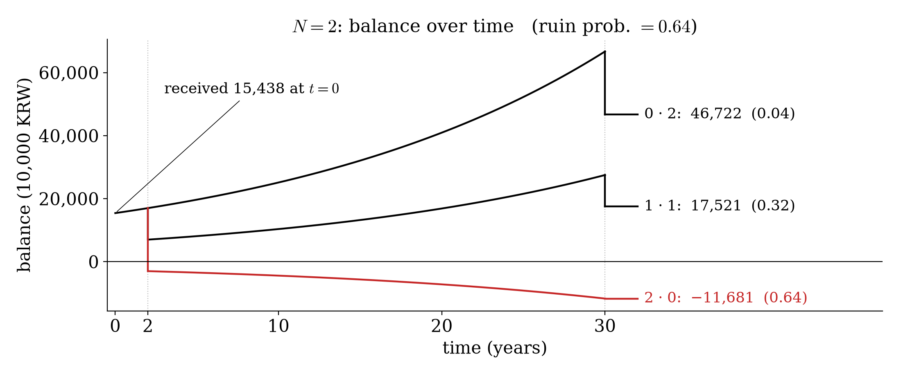
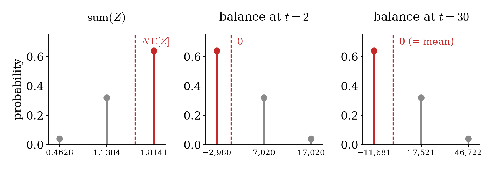
\(N = 3\) // 망할 확률 \(0.512\) // 받은 돈 \(=\) EPV \(\times\, S \times N = 0.7719 \times 10{,}000 \times 3 = 23{,}157\) 만원
| case | 확률 | 사람별 \(Z\) | \(t=0\) | \(t=2\) | \(t=30\) | |||||||
|---|---|---|---|---|---|---|---|---|---|---|---|---|
| \(Z_{1}\) | \(Z_{2}\) | \(Z_{3}\) | \(\mathrm{sum}(Z)\) | \(\mathrm{E}(Z)\) | \(N\,\mathrm{E}(Z)\) | received | 남은 돈 | 파산 | 남은 돈 | 파산 | ||
| 0 · 3 | 0.008 | 0.231 | 0.231 | 0.231 | 0.6941 | 0.7719 | 2.3157 | 23,157 | 25,531 | X | 70,083 | X |
| 1 · 2 | 0.096 | 0.907 | 0.231 | 0.231 | 1.3698 | 0.7719 | 2.3157 | 23,157 | 15,531 | X | 40,882 | X |
| 0.231 | 0.907 | 0.231 | ||||||||||
| 0.231 | 0.231 | 0.907 | ||||||||||
| 2 · 1 | 0.384 | 0.907 | 0.907 | 0.231 | 2.0454 | 0.7719 | 2.3157 | 23,157 | 5,531 | X | 11,681 | X |
| 0.907 | 0.231 | 0.907 | ||||||||||
| 0.231 | 0.907 | 0.907 | ||||||||||
| 3 · 0 | 0.512 | 0.907 | 0.907 | 0.907 | 2.7211 | 0.7719 | 2.3157 | 23,157 | −4,469 | O | −17,521 | O |
case \(=\) (2년 시점 사망 수) \(\cdot\) (30년 시점 사망 수)
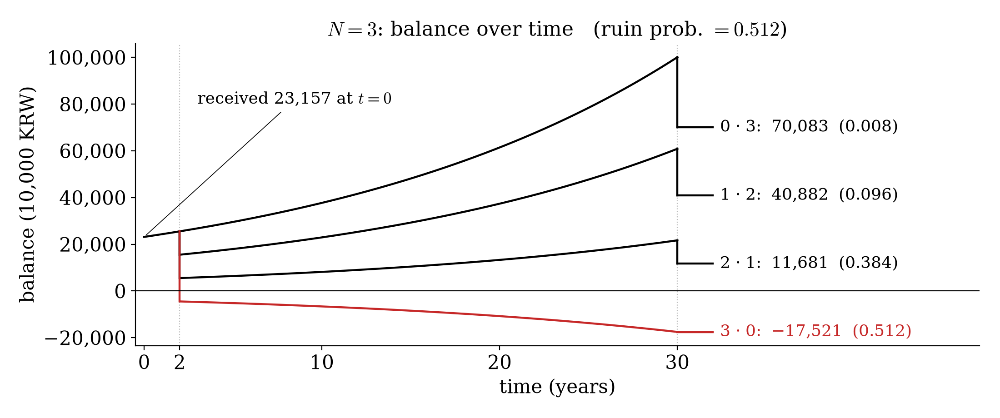
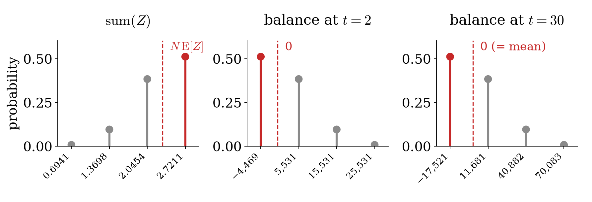
\(N = 4\) // 망할 확률 \(0.4096\) // 받은 돈 \(=\) EPV \(\times\, S \times N = 0.7719 \times 10{,}000 \times 4 = 30{,}876\) 만원
| case | 확률 | 사람별 \(Z\) | \(t=0\) | \(t=2\) | \(t=30\) | ||||||||
|---|---|---|---|---|---|---|---|---|---|---|---|---|---|
| \(Z_{1}\) | \(Z_{2}\) | \(Z_{3}\) | \(Z_{4}\) | \(\mathrm{sum}(Z)\) | \(\mathrm{E}(Z)\) | \(N\,\mathrm{E}(Z)\) | received | 남은 돈 | 파산 | 남은 돈 | 파산 | ||
| 0 · 4 | 0.0016 | 0.231 | 0.231 | 0.231 | 0.231 | 0.9255 | 0.7719 | 3.0876 | 30,876 | 34,041 | X | 93,444 | X |
| 1 · 3 | 0.0256 | 0.907 | 0.231 | 0.231 | 0.231 | 1.6012 | 0.7719 | 3.0876 | 30,876 | 24,041 | X | 64,243 | X |
| 0.231 | 0.907 | 0.231 | 0.231 | ||||||||||
| 0.231 | 0.231 | 0.907 | 0.231 | ||||||||||
| 0.231 | 0.231 | 0.231 | 0.907 | ||||||||||
| 2 · 2 | 0.1536 | 0.907 | 0.907 | 0.231 | 0.231 | 2.2768 | 0.7719 | 3.0876 | 30,876 | 14,041 | X | 35,042 | X |
| 0.907 | 0.231 | 0.907 | 0.231 | ||||||||||
| ⋮ | ⋮ | ⋮ | ⋮ | ||||||||||
| 0.231 | 0.231 | 0.907 | 0.907 | ||||||||||
| 3 · 1 | 0.4096 | 0.907 | 0.907 | 0.907 | 0.231 | 2.9525 | 0.7719 | 3.0876 | 30,876 | 4,041 | X | 5,840 | X |
| 0.907 | 0.907 | 0.231 | 0.907 | ||||||||||
| 0.907 | 0.231 | 0.907 | 0.907 | ||||||||||
| 0.231 | 0.907 | 0.907 | 0.907 | ||||||||||
| 4 · 0 | 0.4096 | 0.907 | 0.907 | 0.907 | 0.907 | 3.6281 | 0.7719 | 3.0876 | 30,876 | −5,959 | O | −23,361 | O |
case \(=\) (2년 시점 사망 수) \(\cdot\) (30년 시점 사망 수)
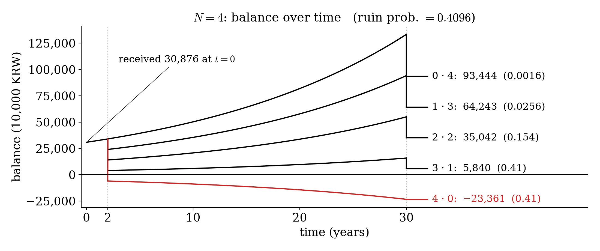
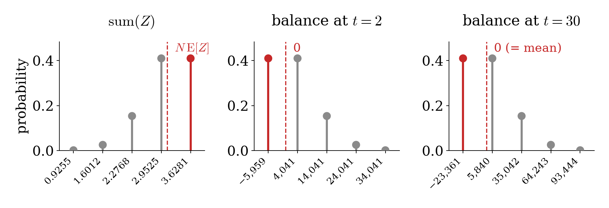
\(N = 5\) // 망할 확률 \(0.32768\) // 받은 돈 \(=\) EPV \(\times\, S \times N = 0.7719 \times 10{,}000 \times 5 = 38{,}595\) 만원
| case | 확률 | 사람별 \(Z\) | \(t=0\) | \(t=2\) | \(t=30\) | |||||||||
|---|---|---|---|---|---|---|---|---|---|---|---|---|---|---|
| \(Z_{1}\) | \(Z_{2}\) | \(Z_{3}\) | \(Z_{4}\) | \(Z_{5}\) | \(\mathrm{sum}(Z)\) | \(\mathrm{E}(Z)\) | \(N\,\mathrm{E}(Z)\) | received | 남은 돈 | 파산 | 남은 돈 | 파산 | ||
| 0 · 5 | 0.00032 | 0.231 | 0.231 | 0.231 | 0.231 | 0.231 | 1.1569 | 0.7719 | 3.8595 | 38,595 | 42,551 | X | 116,805 | X |
| 1 · 4 | 0.0064 | 0.907 | 0.231 | 0.231 | 0.231 | 0.231 | 1.8325 | 0.7719 | 3.8595 | 38,595 | 32,551 | X | 87,604 | X |
| 0.231 | 0.907 | 0.231 | 0.231 | 0.231 | ||||||||||
| ⋮ | ⋮ | ⋮ | ⋮ | ⋮ | ||||||||||
| 0.231 | 0.231 | 0.231 | 0.231 | 0.907 | ||||||||||
| 2 · 3 | 0.0512 | 0.907 | 0.907 | 0.231 | 0.231 | 0.231 | 2.5082 | 0.7719 | 3.8595 | 38,595 | 22,551 | X | 58,403 | X |
| 0.907 | 0.231 | 0.907 | 0.231 | 0.231 | ||||||||||
| ⋮ | ⋮ | ⋮ | ⋮ | ⋮ | ||||||||||
| 0.231 | 0.231 | 0.231 | 0.907 | 0.907 | ||||||||||
| 3 · 2 | 0.2048 | 0.907 | 0.907 | 0.907 | 0.231 | 0.231 | 3.1838 | 0.7719 | 3.8595 | 38,595 | 12,551 | X | 29,201 | X |
| 0.907 | 0.907 | 0.231 | 0.907 | 0.231 | ||||||||||
| ⋮ | ⋮ | ⋮ | ⋮ | ⋮ | ||||||||||
| 0.231 | 0.231 | 0.907 | 0.907 | 0.907 | ||||||||||
| 4 · 1 | 0.4096 | 0.907 | 0.907 | 0.907 | 0.907 | 0.231 | 3.8595 | 0.7719 | 3.8595 | 38,595 | 2,551 | X | 0 | X |
| 0.907 | 0.907 | 0.907 | 0.231 | 0.907 | ||||||||||
| ⋮ | ⋮ | ⋮ | ⋮ | ⋮ | ||||||||||
| 0.231 | 0.907 | 0.907 | 0.907 | 0.907 | ||||||||||
| 5 · 0 | 0.32768 | 0.907 | 0.907 | 0.907 | 0.907 | 0.907 | 4.5351 | 0.7719 | 3.8595 | 38,595 | −7,449 | O | −29,201 | O |
case \(=\) (2년 시점 사망 수) \(\cdot\) (30년 시점 사망 수)
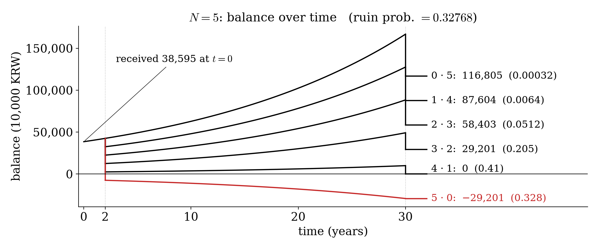
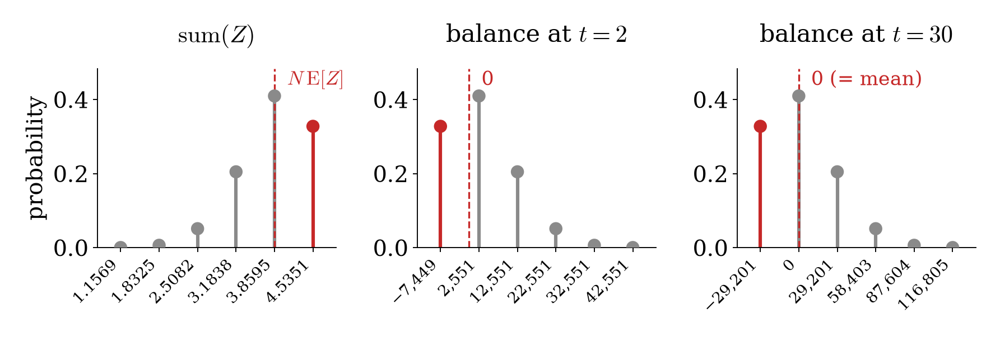
⋮
⋮
⋮
\(N = 100\) // 망할 확률 \(0.46016\) // 받은 돈 \(=\) EPV \(\times\, S \times N = 0.771899 \times 10{,}000 \times 100 = 771{,}899\) 만원
| case | 확률 | 사람별 \(Z\) | \(t=0\) | \(t=2\) | \(t=30\) | |||||
|---|---|---|---|---|---|---|---|---|---|---|
| \(Z_1, \dots, Z_{100}\) | \(\mathrm{sum}(Z)\) | \(\mathrm{E}(Z)\) | \(N\,\mathrm{E}(Z)\) | received | 남은 돈 | 파산 | 남은 돈 | 파산 | ||
| 0 · 100 | 0.0000 | 0.907 또는 0.231 |
23.1377 | 0.7719 | 77.1899 | 771,899 | 851,019 | X | 2,336,103 | X |
| ⋮ | ⋮ | ⋮ | ⋮ | ⋮ | ⋮ | ⋮ | ⋮ | |||
| 78 · 22 | 0.0849 | 75.8386 | 0.7719 | 77.1899 | 771,899 | 71,019 | X | 58,403 | X | |
| 79 · 21 | 0.0946 | 76.5143 | 0.7719 | 77.1899 | 771,899 | 61,019 | X | 29,201 | X | |
| 80 · 20 | 0.0993 | 77.1899 | 0.7719 | 77.1899 | 771,899 | 51,019 | X | 0 | X | |
| 81 · 19 | 0.0981 | 77.8656 | 0.7719 | 77.1899 | 771,899 | 41,019 | X | −29,201 | O | |
| 82 · 18 | 0.0909 | 78.5412 | 0.7719 | 77.1899 | 771,899 | 31,019 | X | −58,403 | O | |
| ⋮ | ⋮ | ⋮ | ⋮ | ⋮ | ⋮ | ⋮ | ⋮ | |||
| 100 · 0 | 0.0000 | 90.7029 | 0.7719 | 77.1899 | 771,899 | −148,981 | O | −584,026 | O | |
case \(=\) (2년 시점 사망 수) \(\cdot\) (30년 시점 사망 수)
사람별 \(Z\) 는 2년 시점에 죽은 사람이면 \(0.907\), 30년 시점에 죽은 사람이면 \(0.231\) 이다. 예를 들어 case 가 \(78 \cdot 22\) 면 \(0.907\) 인 사람이 78명, \(0.231\) 인 사람이 22명이다.
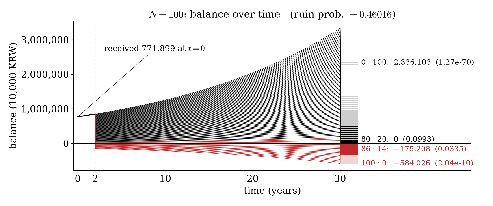
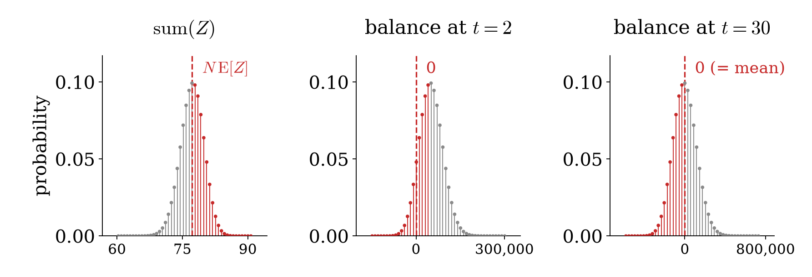
- 예제2에서 \(N\) 에 따라 망할 확률이 아래처럼 변한다.
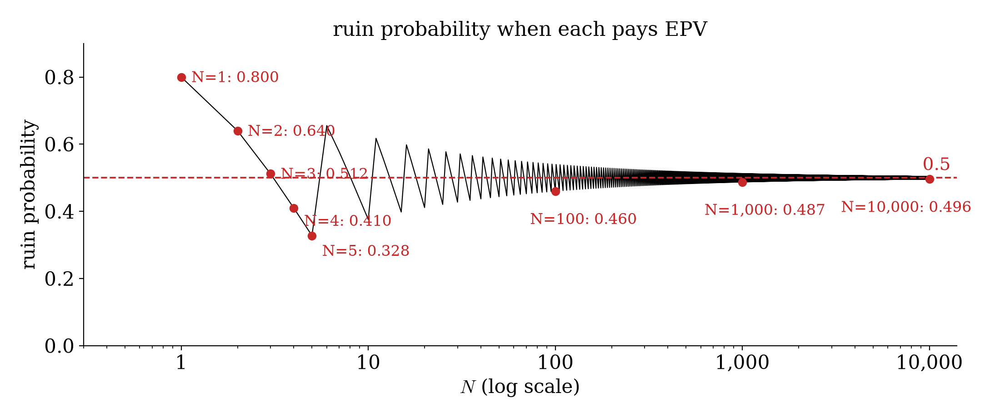
# 예제3 남은 수명이 확률 0.05 로 20년, 확률 0.15 로 40년, 확률 0.40 으로 60년, 확률 0.40 으로 80년인 사람들이 있다. 이런 사람들을 서로 독립으로 \(N\) 명 받는다. 보험금은 1억, \(i = 0.05\) 이고, 한 사람당 EPV 를 받는다. \(N = 1, 2, \dots, 1{,}000\) 일 때 회사가 망할 확률을 각각 구하라.
| 남은 수명 \(T\) | 20년 | 40년 | 60년 | 80년 |
|---|---|---|---|---|
| 확률 | 0.05 | 0.15 | 0.40 | 0.40 |
(풀이)
\(N = 1\) // 망할 확률 \(0.2\) // 받은 돈 \(=\) EPV \(\times\, S \times N = 0.069636 \times 10{,}000 \times 1 \approx 696\) 만원
case \(=\) (20년 시점 사망 수) \(\cdot\) (40년 시점 사망 수) \(\cdot\) (60년 시점 사망 수) \(\cdot\) (80년 시점 사망 수)
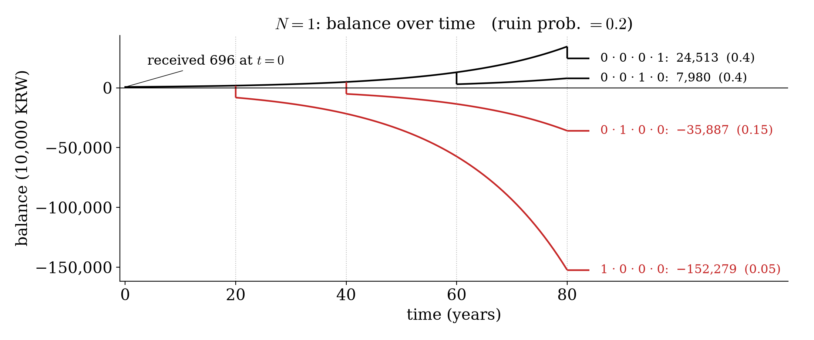
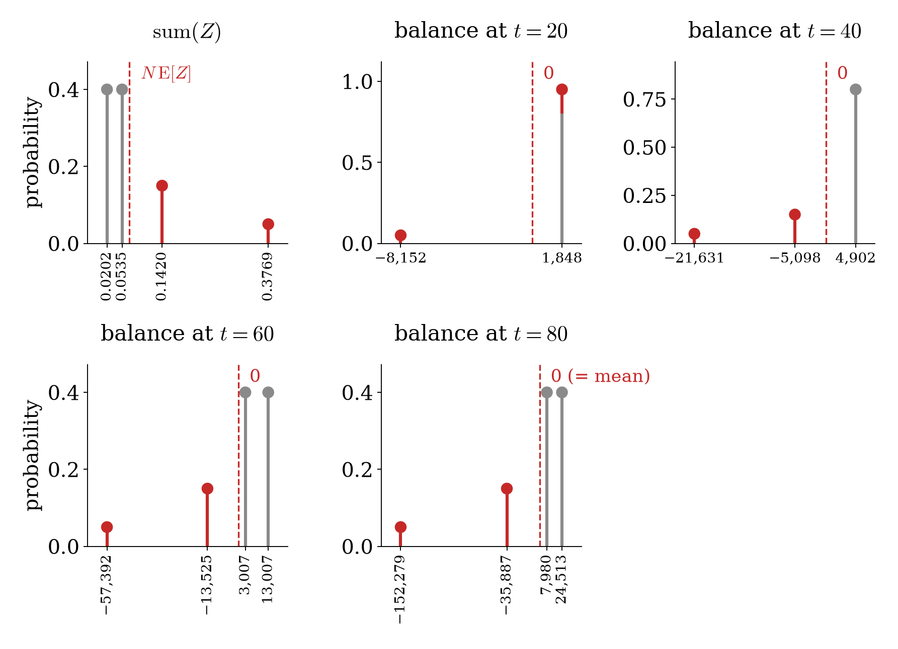
\(N = 2\) // 망할 확률 \(0.36\) // 받은 돈 \(=\) EPV \(\times\, S \times N = 0.069636 \times 10{,}000 \times 2 \approx 1{,}393\) 만원
case \(=\) (20년 시점 사망 수) \(\cdot\) (40년 시점 사망 수) \(\cdot\) (60년 시점 사망 수) \(\cdot\) (80년 시점 사망 수)
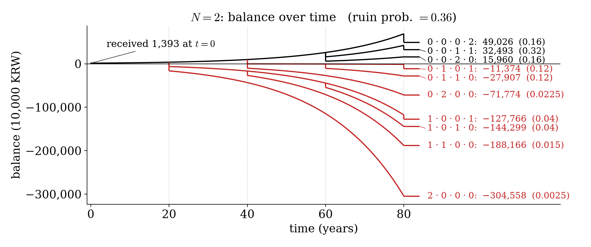
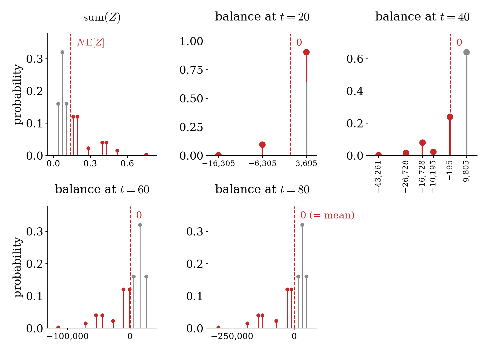
\(N = 3\) // 망할 확률 \(0.416\) // 받은 돈 \(=\) EPV \(\times\, S \times N = 0.069636 \times 10{,}000 \times 3 \approx 2{,}089\) 만원
case \(=\) (20년 시점 사망 수) \(\cdot\) (40년 시점 사망 수) \(\cdot\) (60년 시점 사망 수) \(\cdot\) (80년 시점 사망 수)
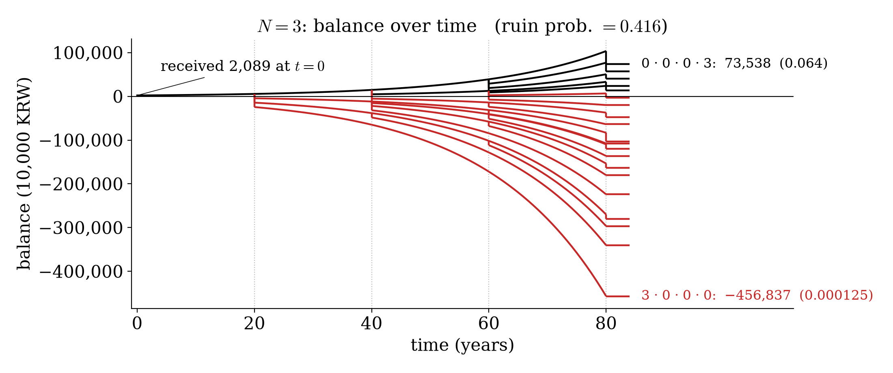
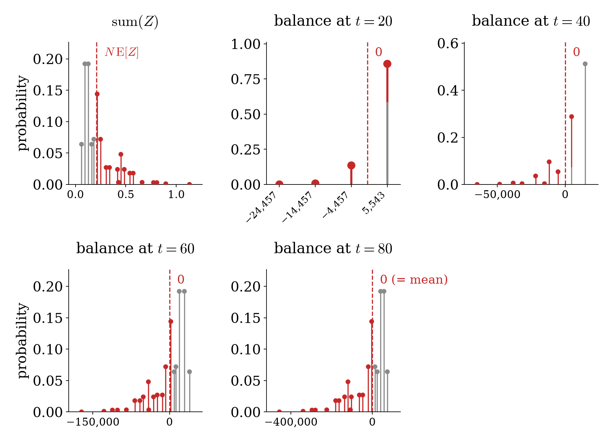
\(N = 4\) // 망할 확률 \(0.3216\) // 받은 돈 \(=\) EPV \(\times\, S \times N = 0.069636 \times 10{,}000 \times 4 \approx 2{,}785\) 만원
case \(=\) (20년 시점 사망 수) \(\cdot\) (40년 시점 사망 수) \(\cdot\) (60년 시점 사망 수) \(\cdot\) (80년 시점 사망 수)
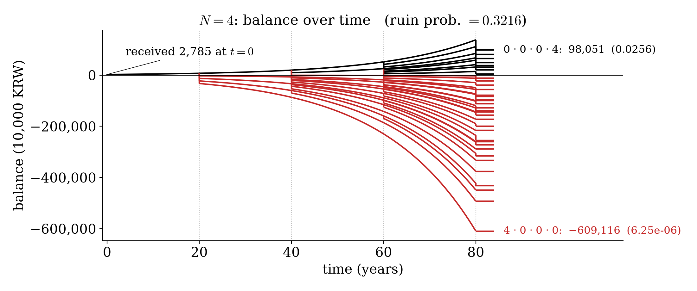
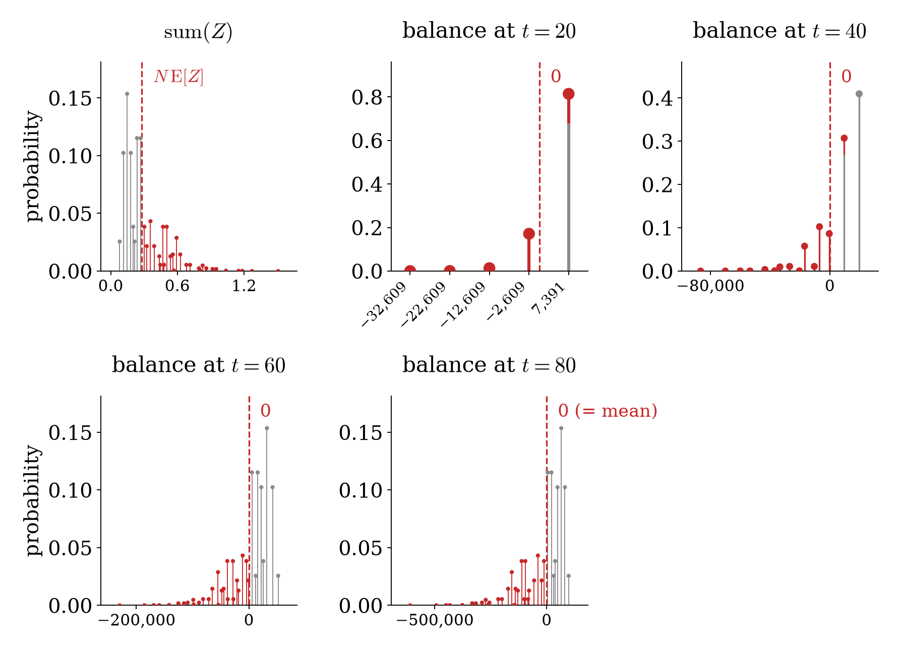
\(N = 5\) // 망할 확률 \(0.36992\) // 받은 돈 \(=\) EPV \(\times\, S \times N = 0.069636 \times 10{,}000 \times 5 \approx 3{,}482\) 만원
case \(=\) (20년 시점 사망 수) \(\cdot\) (40년 시점 사망 수) \(\cdot\) (60년 시점 사망 수) \(\cdot\) (80년 시점 사망 수)
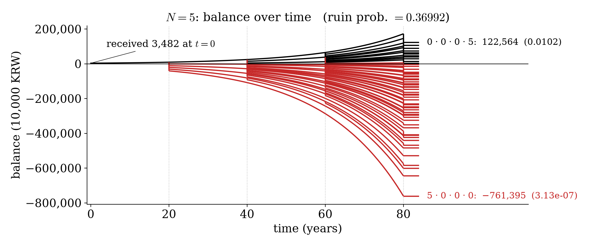
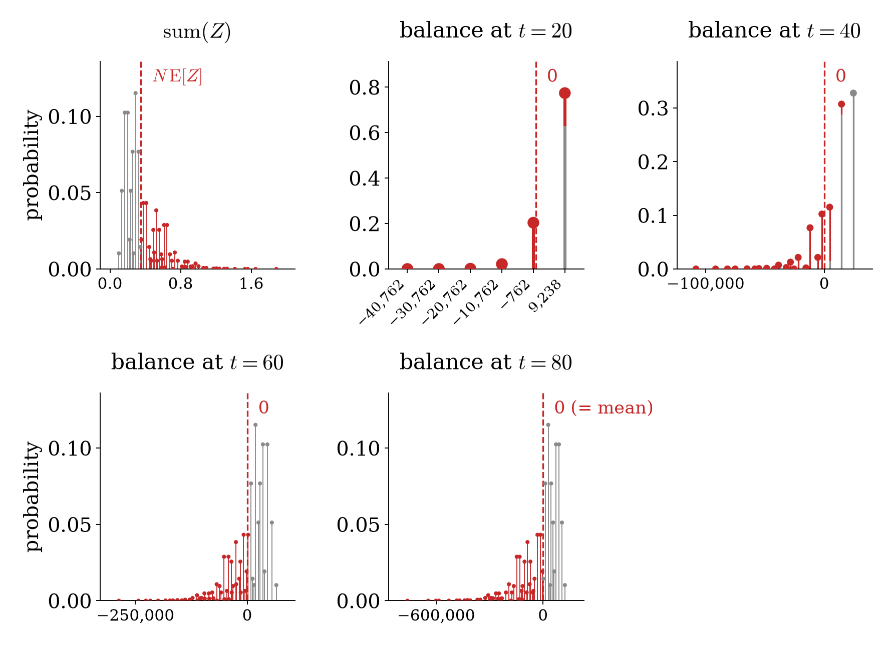
⋮
⋮
⋮
\(N = 100\) // 망할 확률 \(0.4809\) // 받은 돈 \(=\) EPV \(\times\, S \times N = 0.069636 \times 10{,}000 \times 100 \approx 69{,}636\) 만원
case \(=\) (20년 시점 사망 수) \(\cdot\) (40년 시점 사망 수) \(\cdot\) (60년 시점 사망 수) \(\cdot\) (80년 시점 사망 수)
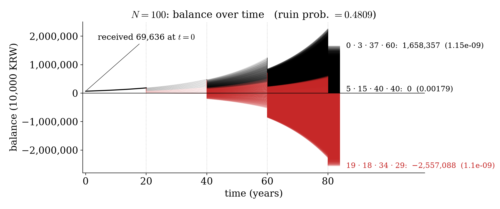
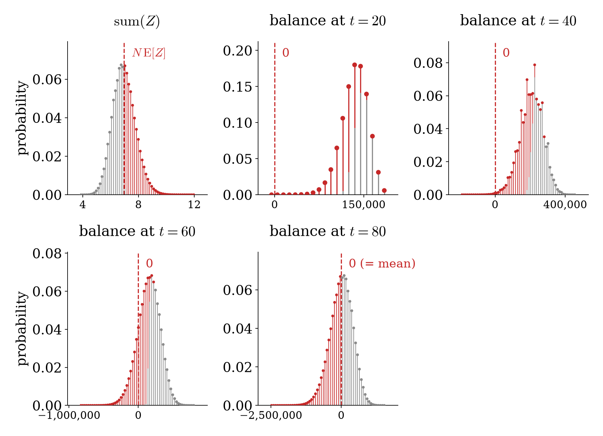
- 예제3에서 \(N\) 에 따라 망할 확률이 아래처럼 변한다.
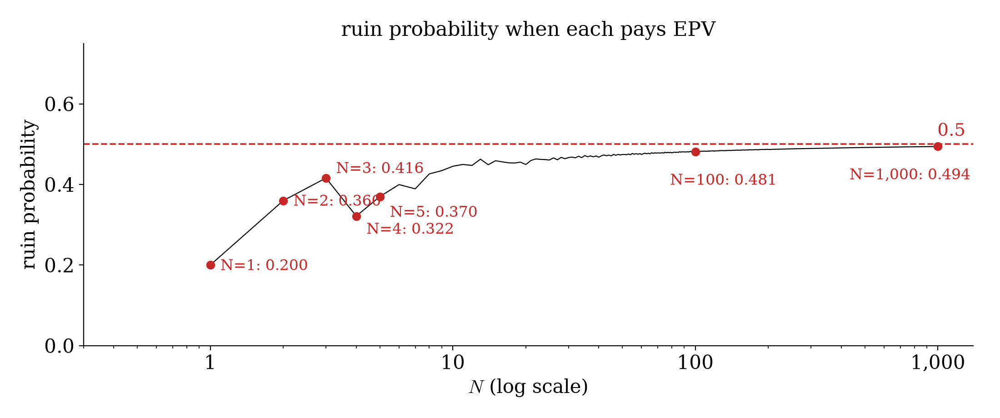
- 예제1·2·3의 결과를 관찰하면 다음을 눈치챌 수 있다.
- \(N\) 이 크면 \(\mathrm{sum}(Z)\) 의 분포는 정규분포 모양에 가까워진다(중심극한정리).
- 모두 죽은 뒤 남은 돈의 분포는 \(\mathrm{sum}(Z)\) 의 분포를 좌우로 정확히 뒤집은 모양이다.
3. 이론 정리
\(N\) 명을 받고, 한 사람당 \(P\) 를 받으며, 보험금은 \(S\), 이자율은 \(i\) 라고 하자.
# 이론1 – \(\bar Z = \mathrm{sum}(Z)/N\) 의 분포는 \(N\) 이 크면 정규분포에 가깝다(중심극한정리). 사람마다의 \(Z\) 가 서로 독립이고 분포가 같기 때문이다. 평균과 분산은
\[ \mathrm{E}[\bar Z] = \mathrm{E}[Z], \qquad \mathrm{V}[\bar Z] = \frac{\mathrm{V}[Z]}{N} \]
이라서, \(N\) 이 크면 \(\bar Z \overset{\cdot}{\sim} N\!\left(\mathrm{E}[Z],\ \dfrac{\mathrm{V}[Z]}{N}\right)\) 이다. 한 사람 \(Z\) 의 평균과 분산만 알면 된다.
# 이론2 – \(t\) 시점의 잔고는
\[ \text{balance}(t) = (1+i)^t\,\bigl(NP - S\,\mathrm{sum}_t(Z)\bigr) \]
이다. 여기서 \(\mathrm{sum}_t(Z)\) 는 \(t\) 시점까지 죽은 사람들의 \(Z\) 만 더한 것이다. 받은 돈 \(NP\) 에서 지금까지 내준 돈의 0 시점 값 \(S\,\mathrm{sum}_t(Z)\) 를 빼고, 그것을 \(t\) 시점 값으로 바꾼 것이다.
# 이론3 – 파산하는 사건은 시점 \(t\) 에 무관하다. 파산은 모두 죽고 정산할 것을 다 한 뒤에 최종으로 판단하기 때문이다. 식으로 보자. 모두 죽은 뒤(= 줄 거 다 준 뒤)에는 \(\mathrm{sum}_t(Z) = \mathrm{sum}(Z)\) 로 굳어 더 변하지 않으므로, 그 뒤 어느 시점 \(t\) 에서 잰 남은 돈은
\[ \text{balance}(t) = (1+i)^t\,\bigl(NP - S\,\mathrm{sum}(Z)\bigr) \]
이다. 파산은 이 남은 돈이 음수인 사건이므로
\[ \begin{aligned} \text{파산} &\iff (1+i)^t\,\bigl(NP - S\,\mathrm{sum}(Z)\bigr) < 0 \\ &\iff NP - S\,\mathrm{sum}(Z) < 0 && (\because (1+i)^t > 0) \\ &\iff S\,\mathrm{sum}(Z) > NP \\ &\iff \frac{\mathrm{sum}(Z)}{N} > \frac{P}{S} && (\because NS > 0) \\ &\iff \bar Z > \frac{P}{S} \end{aligned} \]
이다.
# 이론4 – 모두 죽은 뒤 남은 돈의 분포는 \(\mathrm{sum}(Z)\) 의 분포를 좌우로 뒤집은 모양이다. 이론3 의 남은 돈 식을 \(\mathrm{sum}(Z)\) 에 대해 정리하면
\[ \text{balance}(t) = \underbrace{(1+i)^t NP}_{\text{상수}} - \underbrace{(1+i)^t S}_{\text{양수}}\cdot \mathrm{sum}(Z) \]
이다. \(\mathrm{sum}(Z)\) 에 음수를 곱하고 상수를 더한 것이라 분포의 모양은 그대로 두고 좌우만 뒤집히며, 눈금만 달라진다.
# 이론5 – 한 사람 \(Z\) 의 평균 \(\mathrm{E}[Z]\) 는 EPV 를 구하는 식 그대로다. 분산은 \(\mathrm{V}[Z] = \mathrm{E}[Z^2] - \mathrm{E}[Z]^2\) 인데, \(Z^2 = (v^T)^2 = (v^2)^T\) 이므로 \(\mathrm{E}[Z^2]\) 는 \(v\) 대신 \(v^2\) 을 넣고 \(\mathrm{E}[Z]\) 를 구하는 식을 그대로 돌린 것이다. 즉 \(\mathrm{E}[Z]\) 를 구하는 법만 알면 \(\mathrm{E}[Z^2]\) 도 같은 법으로 구할 수 있고, 둘을 빼면 분산이 나온다.
# 이론6 – \(N\) 이 클 때 파산할 확률은 이론1 과 이론3 을 합치면 바로 나온다.
\[ \bar Z \overset{\cdot}{\sim} N\!\left(\mathrm{E}[Z],\ \frac{\mathrm{V}[Z]}{N}\right) \]
이고, 파산은 \(\bar Z > P/S\) 이므로
\[ \Pr[\text{파산}] = \Pr\!\left[\bar Z > \frac{P}{S}\right] \]
을 이 정규분포에서 읽으면 된다.
4. 연습문제
# 예제4 – (이론1) 남은 수명이 확률 \(0.2\) 로 2년, 확률 \(0.8\) 로 30년인 사람들을 서로 독립으로 \(N\) 명 받는다(\(i = 0.05\)). \(\bar Z\) 의 분포를 그렸더니 아래와 같았다. (a)(b)(c) 는 \(N = 1, 5, 50\) 중 하나씩이다.
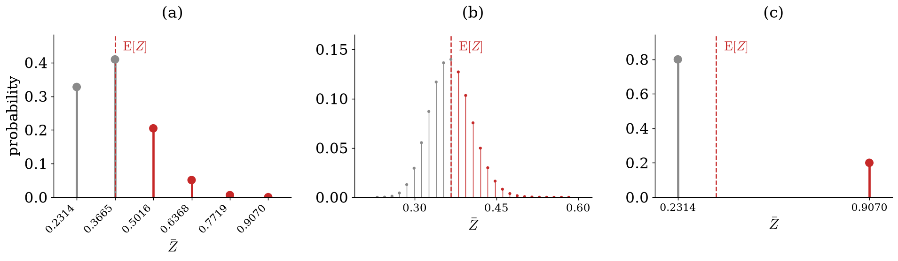
어느 것이 \(N = 50\) 이라고 생각하는가?
(풀이) (b) 다. \(N\) 이 클수록 종 모양에 가까워지고 좁아진다. (c) 는 값이 둘뿐이니 \(N = 1\), (a) 는 여섯 개 값이 보이니 \(N = 5\) 다.
# 예제5 – (이론3) 남은 수명이 확률 \(0.2\) 로 2년, 확률 \(0.8\) 로 30년인 사람들을 서로 독립으로 \(N = 5\) 명 받는다. 보험금은 \(S = 10{,}000\) 만원, \(i = 0.05\) 이고, 한 사람당 \(P = 4{,}000\) 만원을 받기로 했다. 파산하는 사건을 \(\bar Z\) 로 표현하라.
(풀이) \(P/S = 4{,}000/10{,}000 = 0.4\) 이므로 파산 \(\iff \bar Z > 0.4\) 다. (\(\mathrm{sum}(Z)\) 로 쓰면 \(\mathrm{sum}(Z) > 0.4 \times 5 = 2\) 다.)
# 예제6 – (이론4) 남은 수명이 확률 \(0.2\) 로 2년, 확률 \(0.8\) 로 30년인 사람들을 서로 독립으로 \(N = 2\) 명 받고, 한 사람당 EPV 만큼(\(P = 3{,}665\) 만원) 받았다. 보험금은 \(S = 10{,}000\) 만원, \(i = 0.05\) 다. 왼쪽은 \(\mathrm{sum}(Z)\) 의 분포다 — 값은 \(0.46\) (둘 다 30년), \(1.14\) (한 명 2년), \(1.81\) (둘 다 2년) 이고 확률은 \(0.64,\ 0.32,\ 0.04\) 다. 오른쪽 (a)(b)(c) 중 모두 죽은 뒤(\(t = 30\)) 남은 돈의 분포는 어느 것인가?
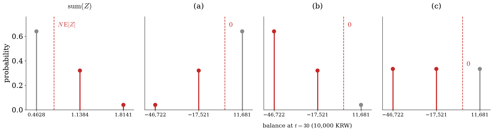
(풀이) (a) 다. \(\mathrm{sum}(Z)\) 의 분포를 좌우로 뒤집은(대칭시킨) 모양이 된다.
# 예제7 – (이론5) 남은 수명 \(T\) 의 분포가 아래 왼쪽과 같은 사람 한 명이 있다. \(i = 0.05\), \(v = 1/1.05\) 이고, 필요한 \(v\) 의 거듭제곱은 오른쪽에 적어 두었다.
| \(T\) | 2 | 30 |
|---|---|---|
| 확률 | 0.2 | 0.8 |
| \(v^2\) | \(v^{30}\) | \(v^4\) | \(v^{60}\) |
|---|---|---|---|
| 0.9070 | 0.2314 | 0.8227 | 0.0535 |
(1) \(Z = v^T\) 의 분포표를 만들고 \(\mathrm{E}[Z]\) 를 구하라.
(2) \(Z^2\) 의 분포표를 만들고 \(\mathrm{E}[Z^2]\) 을 구하라.
(3) \(\mathrm{V}[Z]\) 를 구하라.
(풀이)
(1) \(Z\) 는 \(T\) 가 2 이면 \(v^2\), 30 이면 \(v^{30}\) 이다. 확률은 \(T\) 의 것을 그대로 가져온다.
| \(Z = v^T\) | \(v^2 = 0.9070\) | \(v^{30} = 0.2314\) |
|---|---|---|
| 확률 | 0.2 | 0.8 |
\(\mathrm{E}[Z] = 0.2 \times 0.9070 + 0.8 \times 0.2314 = 0.3665\).
(2) \(Z^2 = (v^T)^2 = (v^2)^T\) 이므로 \(v\) 자리에 \(v^2\) 을 넣은 것이다.
| \(Z^2 = (v^2)^T\) | \(v^4 = 0.8227\) | \(v^{60} = 0.0535\) |
|---|---|---|
| 확률 | 0.2 | 0.8 |
\(\mathrm{E}[Z^2] = 0.2 \times 0.8227 + 0.8 \times 0.0535 = 0.2074\).
(3) \(\mathrm{V}[Z] = \mathrm{E}[Z^2] - \mathrm{E}[Z]^2 = 0.2074 - 0.3665^2 \approx 0.0731\).
# 예제8 – (이론6) 20세 \(N\) 명을 서로 독립으로 받는다. 생존함수는
\[ S_{20}(t) = \exp\left\{-\frac{B}{\log c}\,c^{20}\left(c^t - 1\right)\right\}, \qquad B = 0.0003,\ c = 1.07 \]
이고, 보험금은 \(S = 10^8\) 원(1억), \(i = 0.05\) 다. 한 사람의 \(Z = v^{T_{20}}\) 는 \(\mathrm{E}[Z] = 0.1129\), \(\mathrm{V}[Z] = 0.0168\) 이다. 한 사람당 \(P/S = \mathrm{E}[Z] + 0.01\), 곧 EPV 보다 \(100\) 만원 더 받는다고 하자. \(N\) 이 커지면 \(\bar Z\) 의 분포 · 파산할 확률 · 기대수익은 어떻게 변하는가? (풀지 말고 보기만 하세요)
(풀이) \(\bar Z \overset{\cdot}{\sim} N\!\left(0.1129,\ 0.0168/N\right)\) 이고 파산은 \(\bar Z > P/S = 0.1229\) 다. 아래 그림은 \(N\) 을 \(1\) 에서 \(10{,}000\) 까지 키우며 이것을 그린 것이다.